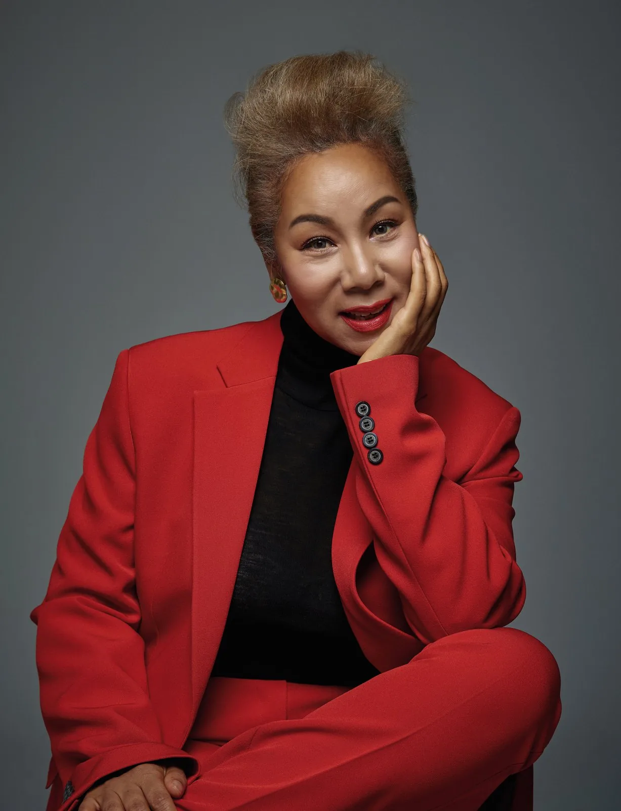

인순이 이야기
노래로 시대를 건너온 사람. 무대 위의 디바이자, 아이들의 이사장 선생님.

공식 프로필 화보
인순이 (본명 김인순)
1957년 4월 5일생. 1978년 걸그룹 '희자매'로 데뷔('실버들' TBC 가요차트 7주 1위)해 1980년 솔로 1집 《인연》으로 홀로서기, 이후 반세기 가까이 무대를 지켜온 대한민국 대표 디바입니다.
'밤이면 밤마다'의 폭발적인 에너지부터 '거위의 꿈'이 전한 위로까지, 장르와 세대를 넘나드는 목소리로 사랑받아 왔습니다. 1999년 뉴욕 카네기홀 무대에 올랐고 2010년 두 번째 카네기홀 단독 공연을 열었으며, 2013년에는 다문화 가정 청소년을 위한 대안학교 '해밀학교'를 세워 교육자의 길을 함께 걷고 있습니다. 2023년에는 KBS2 '골든걸스'로 후배 디바들과 새로운 도전을 보여주었습니다.
걸어온 길
함께 걷는 길, 해밀학교
2013년, 인순이는 강원도 홍천에 다문화 가정 청소년을 위한 대안학교 해밀학교를 설립했습니다. '비 온 뒤 맑게 갠 하늘'이라는 이름처럼, 아이들이 저마다의 꿈을 활짝 펼칠 수 있도록 돕는 배움터입니다.
무대에서 받은 사랑을 무대 밖에서 돌려주는 이 여정은 인순이의 음악만큼이나 오래, 꾸준히 이어지고 있습니다.
해밀학교 홈페이지 방문기억할 순간들
Woman of Influence 2025
펄벅 인터내셔널 '올해의 여성상'. 노래와 나눔이 함께 만든 자리입니다.
거위의 꿈
발표 이후 세대를 넘어 불리는 위로의 노래가 되었습니다. 곡에 얽힌 이야기는 아카이브에서.
해밀학교 개교
가수에서 교육자로. 무대 밖에서 시작된 또 하나의 도전입니다.
수상과 서훈
소속사 공식 프로필과 언론 보도·공개 자료를 교차 확인해 정리했습니다.